Lego Powered Machines Building Instructions
科學動力
即刻智造0908810480/8-8
| 級別 | 圖片 | 主題 | YouTube/介紹 | 操作示範 | 搭建教案 | 其它物件 | 比賽及改裝 |
|---|---|---|---|---|---|---|---|
| A班 | 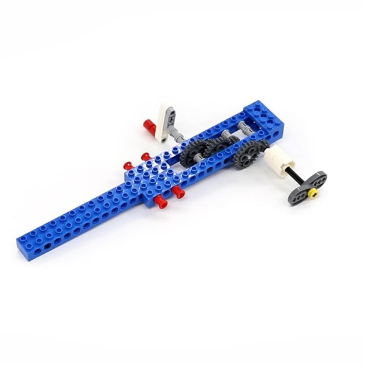 | 攪拌器(手動)16 | 攪拌器 | 操作示範 | 搭建手冊 | 攪拌器改裝 | |
| A班 | 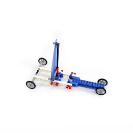 | 小風帆車(手動)28 | 風帆車 | 操作示範 | 搭建手冊 | ||
| A班 | 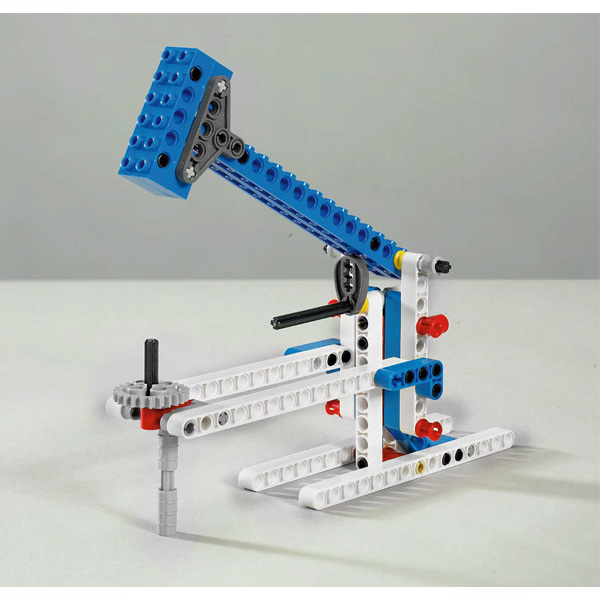 | 大榔頭(手動) | 大榔頭 | 搭建手冊 | |||
| A班 | 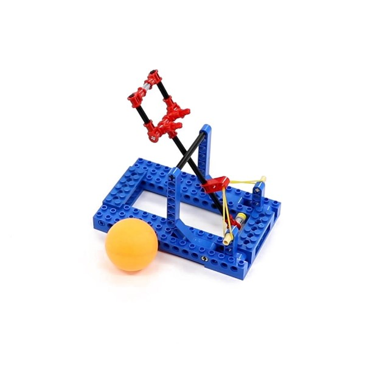 | 投石機(手動)31 | 投石機 | 操作示範 | 搭建手冊 | ||
| A班 | 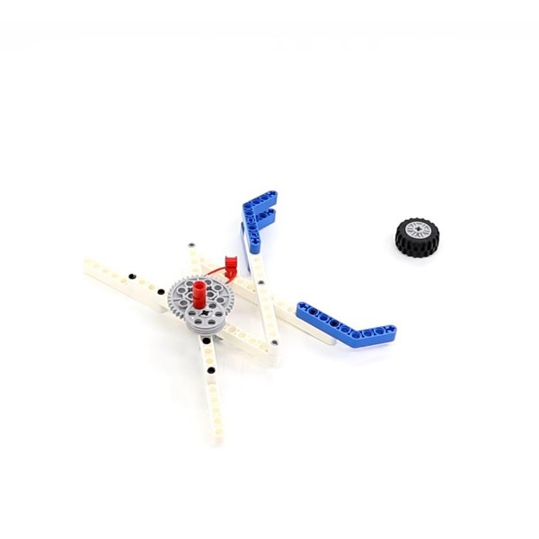 | 機械手(手動)13 | 機械手臂原理 | 操作示範 | 搭建手冊 | ||
| A班 | 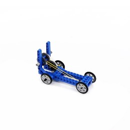 | 回力車(手動)23 | 回力車怎麼跑 | 操作示範 | 搭建手冊 | ||
| A班 | 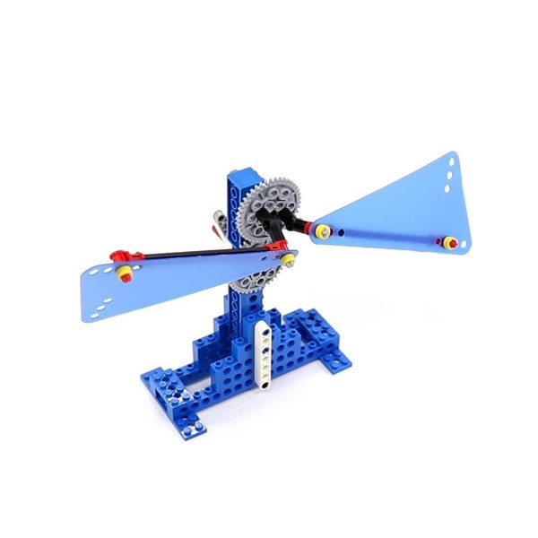 | 手搖風扇(手動)35 | 操作示範 | 搭建手冊 | |||
| A班 | 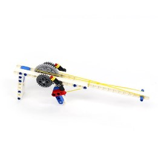 | 橡皮筋槍(手動)22 | 操作示範 | 搭建手冊 | |||
| A班 | 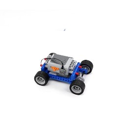 | 電動車(電機)18 | 操作示範 | 搭建手冊 | |||
| A班 | 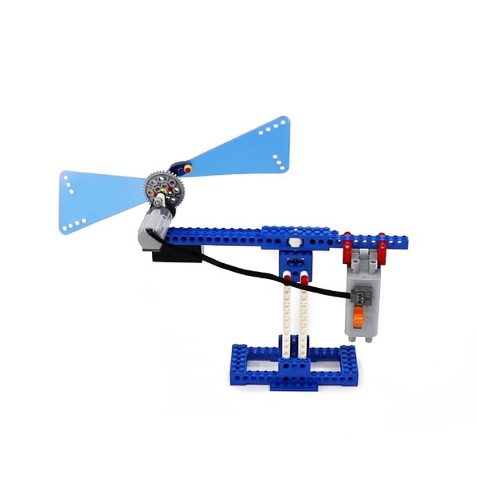 | 平衡風車(電機)39 | 操作示範 | 搭建手冊 | |||
| B班 | 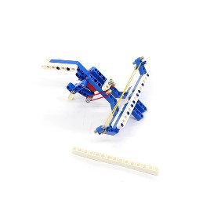 | 連弩(手動)24 | 諸葛連弩 | 操作示範 | |||
| B班 | 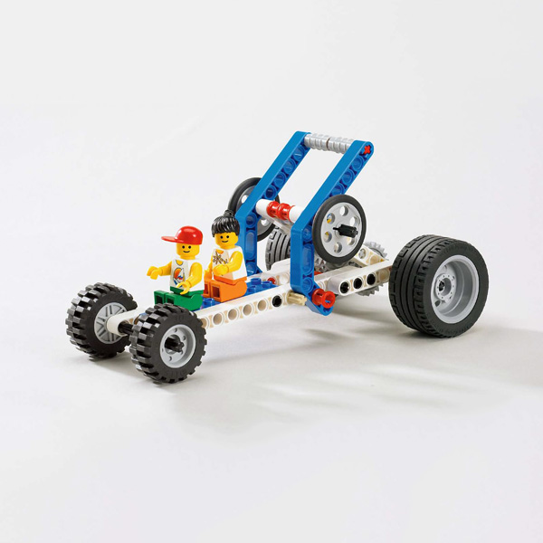 | 飛輪 | |||||
| B班 | 動力車 | ||||||
| B班 | 彈力車(手動)13 | ||||||
| B班 | 戰鬥陀螺(手動)20 | ||||||
| B班 | 腳輪 | ||||||
| B班 | 台秤 | ||||||
| B班 | 重力小車(手動)31 | ||||||
| B班 | 風車 | ||||||
| B班 | 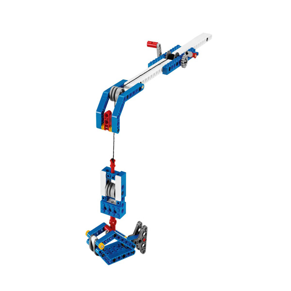 | 魚竿 | |||||
| 1 | 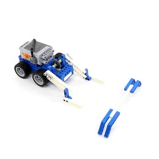 | 堆高機(電機)48 | YouTube 操作示範 搭鍵 製作其它物件 比賽或活動 自由改裝 |
連結 | 堆高機駕駛技術 | ||
| 2 | 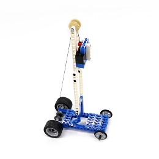 | 重力車(手動)31 | 連結 | 重力車 | |||
| 3 | 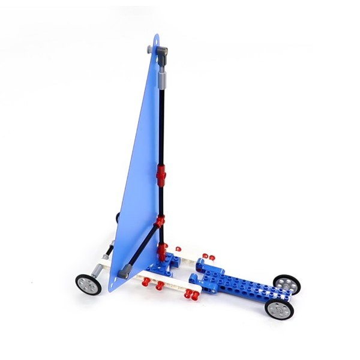 | 大風帆車(手動)11 | 扇子 | 連結 | 風帆車 | ||
| 4 | 小風帆車(手動)28 | ||||||
| 5 | 連弩(手動)24 | 橡皮筋 | 連結 | ||||
| 6 | 投石機(手動)31 | ||||||
| 7 | 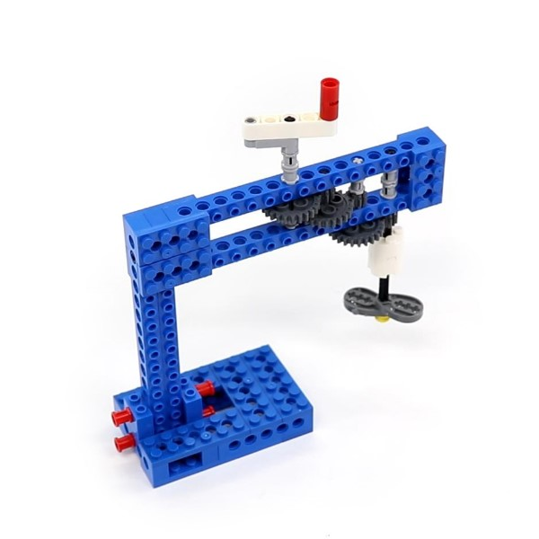 | 攪拌機(手動)16 | 杯子 水 |
連結 | 攪拌機 | ||
| 8 | 攪拌器(手動)16 | ||||||
| 9 | 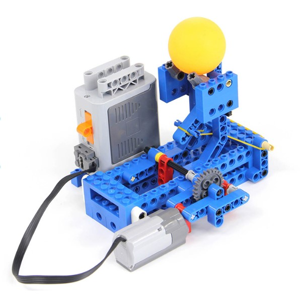 | 投籃機(電機)50 | 乒乓球 | 連結 | 籃球發球機 | ||
| 10 | 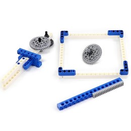 | 戰鬥陀螺(手動)20 | 連結 | 戰鬥陀螺 | |||
| 11 | 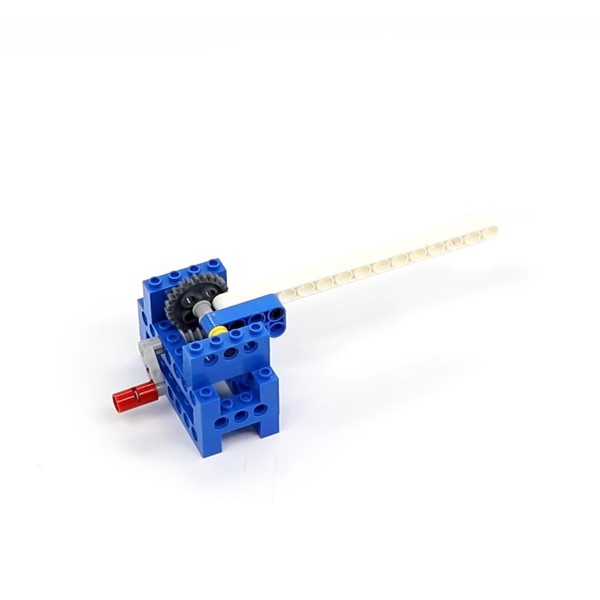 | 道閘(手動)11 | 連結 | 小心道閘 | |||
| 12 | 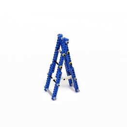 | 梯子(靜止)26 | 連結 | ||||
| 13 | 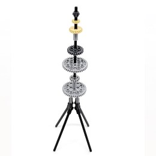 | 塔(靜止)13 | 連結 | ||||
| 14 | 橡皮筋槍(手動)22 | ||||||
| 15 | 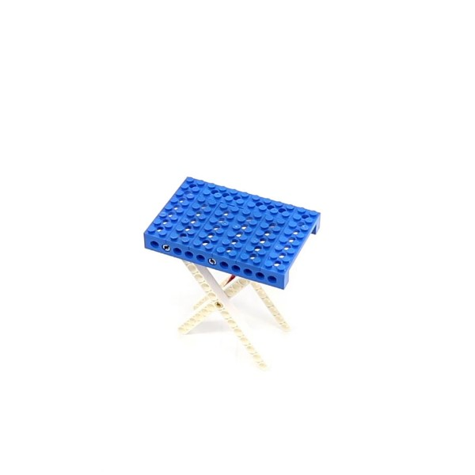 | 折疊凳(靜止)13 | 連結 | ||||
| 16 | 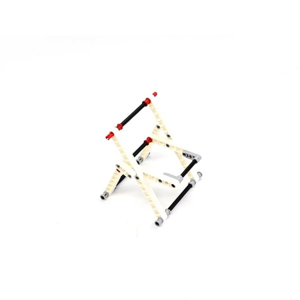 | 折疊椅(靜止)23 | 連結 | ||||
| 17 | 回力車(手動)23 | 連結 | 回力車怎麼跑 | ||||
| 18 | 機械手(手動)13 | 連結 | 機械手臂原理 | ||||
| 19 | 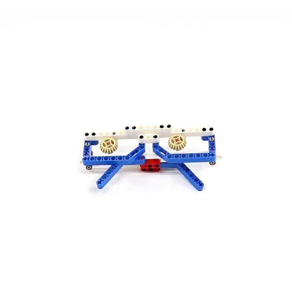 | 戰鬥眼鏡(靜止)28 | 連結 | 我的戰鬥力是53萬 | |||
| 20 | 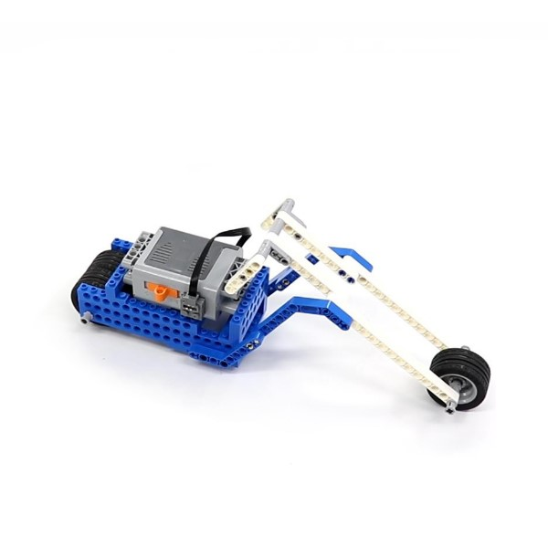 | 重型機車(電機)39 | 連結 | ||||
| 21 | 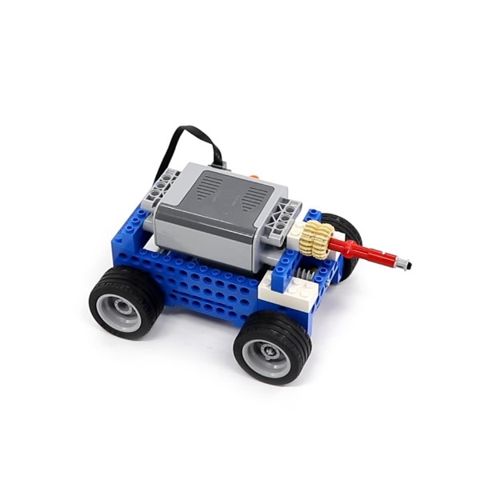 | 裝甲車(電機)41 | 連結 | ||||
| 22 | 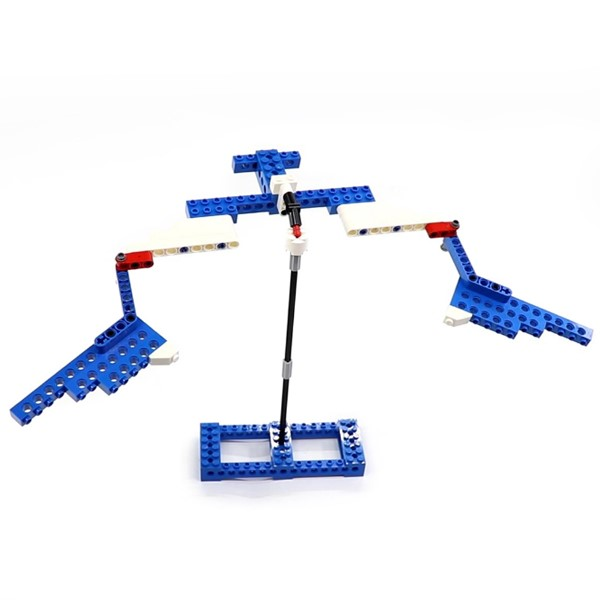 | 平衡鳥(手動)37 | 摺紙 | 連結 | 好神奇的平衡鳥 | ||
| 23 | 平衡風車(電機)39 | ||||||
| 24 | 手搖風扇(手動)35 | ||||||
| 25 | 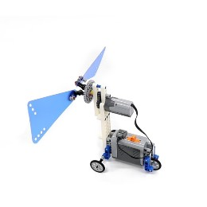 | 風力車(電機)35 | 連結 | ||||
| 26 | 電動汽車(電機)18 | ||||||
| 27 | 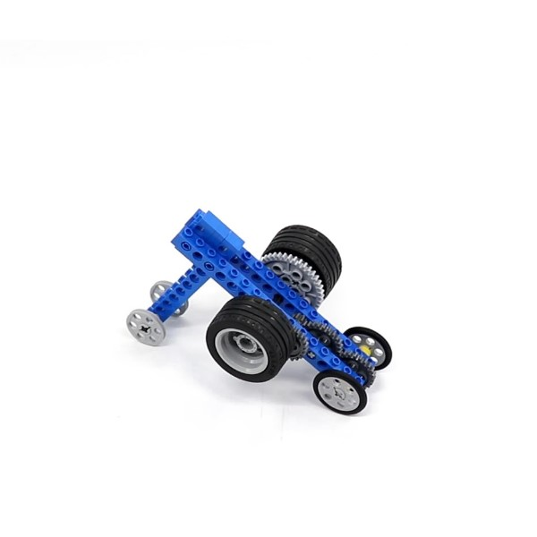 | 飛輪車(手動)16 | 連結 | ||||
| 28 | 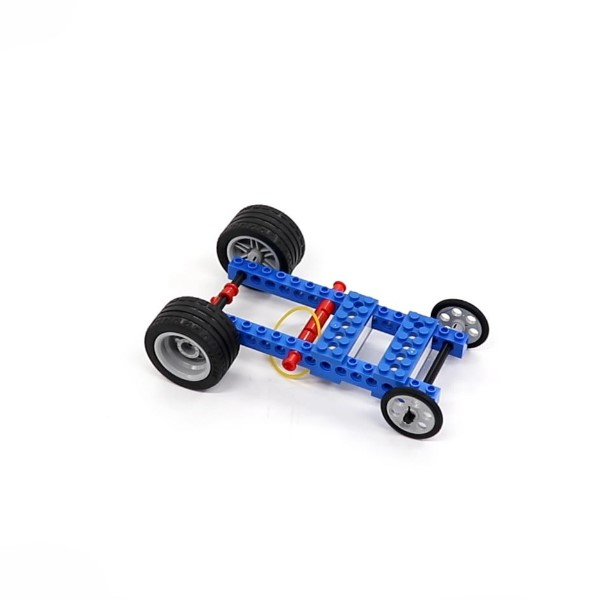 | 彈力車(手動)13 | 連結 | ||||
| 29 | 清掃車 | 連結 | |||||
| 30 | 魚竿 | 連結 | |||||
| 31 | 慣性滑行 | ||||||
| 32 | 錘子 | 搭建手冊 | 大榔頭和錘子前半部相同 | ||||
| 33 | 腳輪 | 搭建手冊 | |||||
| 34 | 台秤 | 搭建手冊 | |||||
| 35 | 擺鐘 | 搭建手冊 | |||||
| 36 | 風車 | 搭建手冊 | |||||
| 37 | 陸地游艇 | 搭建手冊 | |||||
| 38 | 飛輪 | 搭建手冊 | |||||
| 39 | 動力車 | 搭建手冊 | |||||
| 40 | 高速賽車 | 搭建手冊 | |||||
| 41 | 機械巨蟲(A)(B) | 單元介紹 組裝 創意製作其它物件 裝飾後比賽或活動 自由改裝活動 |
搭建手冊 | 博比特蟲 | |||
| 42 | 機器狗 | 單元介紹 組裝 創意製作其它物件 裝飾後比賽或活動 自由改裝活動 |
搭建手冊 | SONY-寵物機器狗Aibo | |||
| 43 | 天平 | ||||||
| 44 | 塔式起重機 | 搭建手冊 | |||||
| 45 | 滾動與滑動摩擦 | ||||||
| 46 | 變速賽車 | 搭建手冊 | |||||
| 47 | 齒輪10種結構 | 搭建手冊 | |||||
| 48 | 槓桿 | 搭建手冊 | |||||
| 49 | 滑輪 | 搭建手冊 | |||||
| 50 | 棘爪棘輪 | 搭建手冊 | |||||
| 51 | 輪軸 | 搭建手冊 | |||||
| 52 | 螺旋 | 搭建手冊 | |||||
| 53 | 凸輪 | 搭建手冊 | |||||
| 54 | 穩定結構 | 搭建手冊 | |||||
| 55 | 楔形 | 搭建手冊 | |||||
| 56 | 斜面 | 搭建手冊 | |||||
| 57 | 大榔頭 | 搭建手冊 | 大榔頭和錘子前半部相同 |